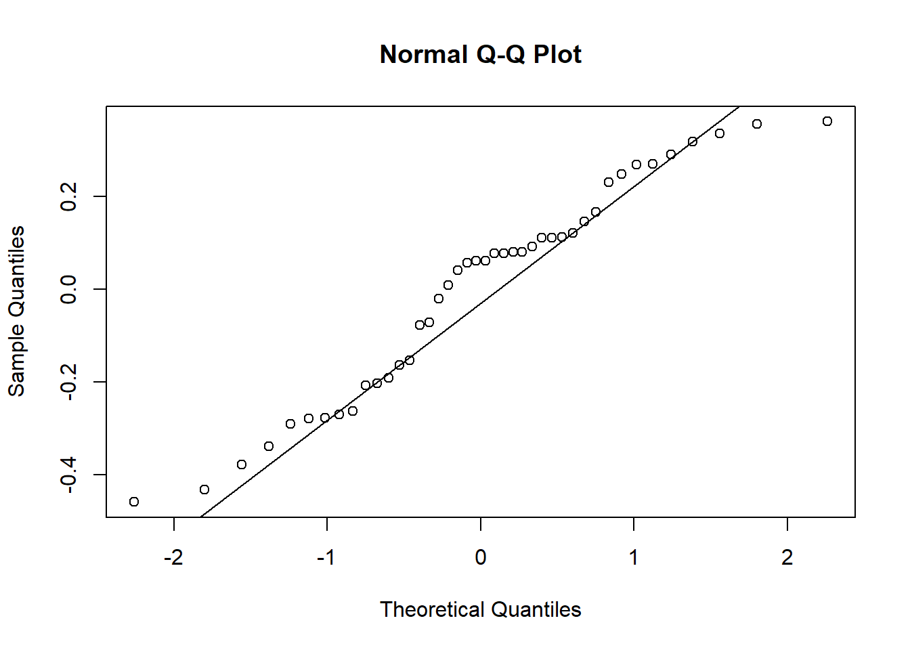

library (readxl)
library (tidyverse)
micelial <- read_excel("dados-diversos.xlsx", "micelial")
micelial |>
ggplot(aes(especie, tcm))+
geom_boxplot()Anova I fator, Teste de Normalidade e Homocedasticidade, Teste não-paramétrico
Anova I fator
A Análise de Variância, ou ANOVA, é uma análise estatística para determinar a contribuição de diferentes fatores na variância total de um experimento.
A análise de variância de I fator, ou ANOVA simples, é uniletaral. Adequada para experimentos com apenas uma variável independente com dois ou mais níveis.
Nessa etapa de aprendizagem, começamos a trabalhar algo que chamaremos de Análise Exploratória. Antes de determinar qualquer análise estatística no trabalho, é importante trabalhar uma análise visual. Essa análise já permite que algumas conclusões sejam feitas e que o caminho mais adequado seja escolhido. A análise exploratória permite quem está trabalhando os dados perceber se existe algum padrão de distribuição nos dados, se essa distribuição é, visualmente, normal, se os dados se agrupam de alguma forma, etc.
Então, o primeiro passo agora, é explodar os dados.
Feita essa análise visual, seja com boxplot, histogramas, colunas, dispersão… partimos para aplicação da Anova I fator.
aov1 <- aov(tcm ~ especie, data = micelial)
summary (aov1) Df Sum Sq Mean Sq F value Pr(>F)
especie 4 0.4692 0.11729 1.983 0.117
Residuals 37 2.1885 0.05915 Testes de Normalidade e Homocedasticidade
Teste de Normalidade
A suposição de normalidade dos dados amostrais é uma condição exigida para a realização de muitas inferências válidas a respeito de parâmetros populacionais. Vários dos diferentes métodos de estimação e testes de hipóteses existentes foram formulados sob a suposição de que a amostra aleatória tenha sido extraída de uma população gaussiana.
Teste de Homocedasticidade
Em análise de variância(ANOVA), há um pressuposto que deve ser atendido que é de os erros terem variância comum, ou seja, homocedasticidade. Isso implica que cada tratamento que se está sendo comparado pelo teste F, deve ter aproximadamente a mesma variância para que a ANOVA tenha validade. Quando este pressuposto não é atendido dizemos que as variâncias não são homogêneas, ou ainda, que existe heterocedasticidade.
#Checando as premissas
library (performance)
check_heteroscedasticity(aov1)OK: Error variance appears to be homoscedastic (p = 0.175).check_normality(aov1)OK: residuals appear as normally distributed (p = 0.074).#Testes de Normalidade
hist(aov1$residuals) 
#Permite ver a curva de distribuição dos dados, confirmando o que se tem nos testes anteriores - distribuição normal.
shapiro.test(aov1$residuals)
Shapiro-Wilk normality test
data: aov1$residuals
W = 0.95101, p-value = 0.07022Outra forma de verificar se uma amostra segue a distribuição gaussiana é através dos gráficos de envelope normal de probabilidade e seu envelope com intervalo de confiança simulado.
Podemos fazer usando as funções “qqnorm()” e “qqline” sem o envelope:
qqnorm(aov1$residuals)
qqline(aov1$residuals)
Ou com o envelope simulado com o pacote “DHARMa” e a função “plot()”:
library (DHARMa)
plot(simulateResiduals(aov1))
É possível ainda encontrar casos como o exemplo abaixo:
InsectSprays count spray
1 10 A
2 7 A
3 20 A
4 14 A
5 14 A
6 12 A
7 10 A
8 23 A
9 17 A
10 20 A
11 14 A
12 13 A
13 11 B
14 17 B
15 21 B
16 11 B
17 16 B
18 14 B
19 17 B
20 17 B
21 19 B
22 21 B
23 7 B
24 13 B
25 0 C
26 1 C
27 7 C
28 2 C
29 3 C
30 1 C
31 2 C
32 1 C
33 3 C
34 0 C
35 1 C
36 4 C
37 3 D
38 5 D
39 12 D
40 6 D
41 4 D
42 3 D
43 5 D
44 5 D
45 5 D
46 5 D
47 2 D
48 4 D
49 3 E
50 5 E
51 3 E
52 5 E
53 3 E
54 6 E
55 1 E
56 1 E
57 3 E
58 2 E
59 6 E
60 4 E
61 11 F
62 9 F
63 15 F
64 22 F
65 15 F
66 16 F
67 13 F
68 10 F
69 26 F
70 26 F
71 24 F
72 13 Finsects <- as_tibble(InsectSprays) |>
select (spray, count)
insects |>
ggplot(aes(spray, count))+
geom_boxplot()
Após a análise exploratória, é possível perceber que os dados apresentam uma distribuição um pouco diferente. Partimos para a aplicação de ANOVA e checar as premissas.
aov2 <- aov(count ~ spray, data = insects)
summary (aov2) Df Sum Sq Mean Sq F value Pr(>F)
spray 5 2669 533.8 34.7 <2e-16 ***
Residuals 66 1015 15.4
---
Signif. codes: 0 '***' 0.001 '**' 0.01 '*' 0.05 '.' 0.1 ' ' 1check_heteroscedasticity(aov2)Warning: Heteroscedasticity (non-constant error variance) detected (p < .001).check_normality(aov2)Warning: Non-normality of residuals detected (p = 0.022).Feito isso, vemos que os dados não apresentam distruibuição normal e são heterocedasticos. Uma das alternativas que temos para trabalhar esse conjunto é a transformação. Nesse caso, usaremos a transformação em raiz (sqrt), mas o R tem uma série de transformações possíveis. As transformações são feitas por tentativa e erro, até que uma delas atenda o que você precisa.
aov3 <- aov(sqrt(count) ~ spray, data = insects)
summary (aov3) Df Sum Sq Mean Sq F value Pr(>F)
spray 5 88.44 17.688 44.8 <2e-16 ***
Residuals 66 26.06 0.395
---
Signif. codes: 0 '***' 0.001 '**' 0.01 '*' 0.05 '.' 0.1 ' ' 1check_heteroscedasticity(aov3)OK: Error variance appears to be homoscedastic (p = 0.854).check_normality(aov3)OK: residuals appear as normally distributed (p = 0.681).#Os dados transformados por raiz são normais e homocedaticos.
#Testes de Normalidade
hist(aov3$residuals)shapiro.test(aov3$residuals)
Shapiro-Wilk normality test
data: aov3$residuals
W = 0.98721, p-value = 0.6814#Gráficos para distribuição gaussiana
qqnorm(aov3$residuals)
qqline(aov3$residuals)
Pacote “emmeans”
Calcular médias marginais estimadas (EMMs) para fatores específicos ou combinações de fatores em um modelo linear; e opcionalmente, comparações ou contrastes entre eles. EMMs também são conhecidos como médias de mínimos quadrados.
library (emmeans)
aov3_means <- emmeans(aov3, ~ spray,
type = "response")
aov3_means spray response SE df lower.CL upper.CL
A 14.14 1.364 66 11.550 17.00
B 15.03 1.406 66 12.352 17.97
C 1.55 0.452 66 0.779 2.58
D 4.68 0.785 66 3.248 6.38
E 3.27 0.656 66 2.095 4.72
F 16.15 1.458 66 13.370 19.19
Confidence level used: 0.95
Intervals are back-transformed from the sqrt scale pwpm(aov3_means) A B C D E F
A [14.14] 0.9975 <.0001 <.0001 <.0001 0.9145
B -0.116 [15.03] <.0001 <.0001 <.0001 0.9936
C 2.516 2.632 [ 1.55] 0.0081 0.2513 <.0001
D 1.596 1.712 -0.919 [ 4.68] 0.7366 <.0001
E 1.951 2.067 -0.565 0.355 [ 3.27] <.0001
F -0.258 -0.142 -2.774 -1.854 -2.209 [16.15]
Row and column labels: spray
Upper triangle: P values adjust = "tukey"
Diagonal: [Estimates] (response) type = "response"
Lower triangle: Comparisons (estimate) earlier vs. laterPacote “multcomp”
Testes simultâneos e intervalos de confiança para hipóteses lineares gerais em modelos paramétricos, incluindo efeitos lineares, lineares generalizados, lineares mistos e modelos de sobrevivência.
Pacote “multcompView”
Converta um vetor lógico ou um vetor de valores-p ou uma matriz de correlação, diferença ou distância em uma exibição identificando os pares para os quais as diferenças não foram significativamente diferentes.
cld
Extrai e exibe informações sobre todas as comparações pareadas de médias de mínimos quadrados.
library (multcomp)
library (multcompView)
cld(aov3_means) spray response SE df lower.CL upper.CL .group
C 1.55 0.452 66 0.779 2.58 1
E 3.27 0.656 66 2.095 4.72 12
D 4.68 0.785 66 3.248 6.38 2
A 14.14 1.364 66 11.550 17.00 3
B 15.03 1.406 66 12.352 17.97 3
F 16.15 1.458 66 13.370 19.19 3
Confidence level used: 0.95
Intervals are back-transformed from the sqrt scale
Note: contrasts are still on the sqrt scale
P value adjustment: tukey method for comparing a family of 6 estimates
significance level used: alpha = 0.05
NOTE: If two or more means share the same grouping symbol,
then we cannot show them to be different.
But we also did not show them to be the same. Teste Não Paramétrico
Os testes não paramétricos, também conhecidos como testes de distribuição gratuita, são aqueles baseados em certas hipóteses, mas que não possuem uma organização normal. Geralmente, contêm resultados estatísticos provenientes de suas ordenações, o que os torna mais fáceis de entender.
Teste de Kruskal-Wallis
O teste de Kruskal-Wallis é utilizado em situações onde queremos comparar mais de dois grupos independentes, de tamanhos iguais ou não, com variável resposta quantitativa. O teste é uma alternativa quando os pressupostos necesários pelo teste F da Análise de Variância não são atendidos, tendo em vista que o teste de Kruskal-Wallis dispensa a pressuposição de normalidade e homocedasticidade.
kruskal.test(count ~spray, data = insects)
Kruskal-Wallis rank sum test
data: count by spray
Kruskal-Wallis chi-squared = 54.691, df = 5, p-value = 1.511e-10library (agricolae)
kruskal(insects$count, insects$spray,
console = TRUE)
Study: insects$count ~ insects$spray
Kruskal-Wallis test's
Ties or no Ties
Critical Value: 54.69134
Degrees of freedom: 5
Pvalue Chisq : 1.510845e-10
insects$spray, means of the ranks
insects.count r
A 52.16667 12
B 54.83333 12
C 11.45833 12
D 25.58333 12
E 19.33333 12
F 55.62500 12
Post Hoc Analysis
t-Student: 1.996564
Alpha : 0.05
Minimum Significant Difference: 8.462804
Treatments with the same letter are not significantly different.
insects$count groups
F 55.62500 a
B 54.83333 a
A 52.16667 a
D 25.58333 b
E 19.33333 bc
C 11.45833 cglm
Usado para ajustar modelos lineares generalizados, especificados por meio de uma descrição simbólica do preditor linear e uma descrição da distribuição de erro.
Família
Os objetos de família fornecem uma maneira conveniente de especificar os detalhes dos modelos usados por funções como “glm”.
glm1 <- glm(count ~ spray,
data = insects,
family = poisson(link = "identity"))Visualização gráfica e comparação de médias.
library (DHARMa)
plot(simulateResiduals(glm1))summary(glm1)
Call:
glm(formula = count ~ spray, family = poisson(link = "identity"),
data = insects)
Deviance Residuals:
Min 1Q Median 3Q Max
-2.3852 -0.8876 -0.1482 0.6063 2.6922
Coefficients:
Estimate Std. Error z value Pr(>|z|)
(Intercept) 14.5000 1.0992 13.191 < 2e-16 ***
sprayB 0.8333 1.5767 0.529 0.597
sprayC -12.4167 1.1756 -10.562 < 2e-16 ***
sprayD -9.5833 1.2720 -7.534 4.92e-14 ***
sprayE -11.0000 1.2247 -8.981 < 2e-16 ***
sprayF 2.1667 1.6116 1.344 0.179
---
Signif. codes: 0 '***' 0.001 '**' 0.01 '*' 0.05 '.' 0.1 ' ' 1
(Dispersion parameter for poisson family taken to be 1)
Null deviance: 409.041 on 71 degrees of freedom
Residual deviance: 98.329 on 66 degrees of freedom
AIC: 376.59
Number of Fisher Scoring iterations: 3glml_means <- emmeans(glm1, ~ spray)
cld(glml_means) spray emmean SE df asymp.LCL asymp.UCL .group
C 2.08 0.417 Inf 1.27 2.90 1
E 3.50 0.540 Inf 2.44 4.56 12
D 4.92 0.640 Inf 3.66 6.17 2
A 14.50 1.099 Inf 12.35 16.65 3
B 15.33 1.130 Inf 13.12 17.55 3
F 16.67 1.179 Inf 14.36 18.98 3
Confidence level used: 0.95
P value adjustment: tukey method for comparing a family of 6 estimates
significance level used: alpha = 0.05
NOTE: If two or more means share the same grouping symbol,
then we cannot show them to be different.
But we also did not show them to be the same. Transformação BoxCox
A transformação Box-Cox é uma transformação de poder que elimina a não linearidade entre variáveis, variâncias diferentes e assimetria variável. A função boxcox do pacote MASS em R pode ser usada para estimar o parâmetro de transformação usando estimativa de máxima verossimilhança. Também receberemos o intervalo de confiança de 95% do parâmetro dessa função.Você deve calcular um modelo linear com a função lm e passá-lo para a função boxcox para determinar o “lambda” apropriado.
library (MASS)
insects# A tibble: 72 × 2
spray count
<fct> <dbl>
1 A 10
2 A 7
3 A 20
4 A 14
5 A 14
6 A 12
7 A 10
8 A 23
9 A 17
10 A 20
# ℹ 62 more rowsb <- boxcox (lm(insects$count+0.1 ~ 1))
lambda <- b$x[which.max(b$y)]
lambda[1] 0.4242424#A linha vertical tracejada no meio representa o parâmetro estimado lambda hat.
insects$count2 <- (insects$count ^ lambda - 1) / lambda
insects$count [1] 10 7 20 14 14 12 10 23 17 20 14 13 11 17 21 11 16 14 17 17 19 21 7 13 0
[26] 1 7 2 3 1 2 1 3 0 1 4 3 5 12 6 4 3 5 5 5 5 2 4 3 5
[51] 3 5 3 6 1 1 3 2 6 4 11 9 15 22 15 16 13 10 26 26 24 13